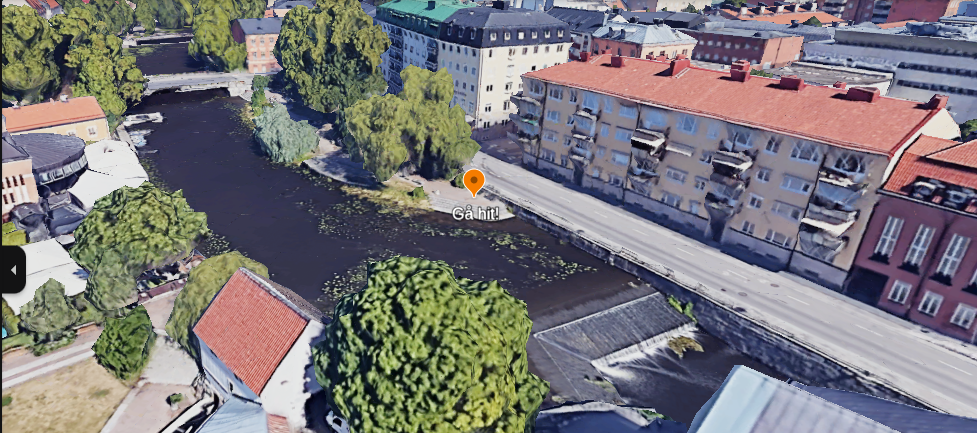

2024 års mystiska aktivitet....
är...
Skattjakt!
När? Skattjakten sitter ute just nu, så det är bara att köra! Den sitter ute tills jag orkar plocka in den. Och det kommer att dröja tills jag orkar göra det...
Hur lång tid tar det? Jag räknar med att det tar en heldag, men i ärlighetens namn vet jag inte riktigt.
Måste jag göra hela skattjakten samma dag? Nej. Det går förstås jättebra att ta en paus och komma tillbaka en annan dag. Skatten ligger kvar...
Får man samarbeta? Såklart! Delad skatt är dubbel skatt!
Får man googla? Det går utmärkt att googla!
Kostar det något? Det är gratis att delta. Om man vill få ett pris efteråt så kostar det dock lite. Återkommer med kostnad (max 100 kr).
Vad behöver jag ta med? En mobil att googla på, kläder efter väder och en cykel. Dessutom får man gärna ta med minst en kompis och ett glatt humör!
Jag har kört fast, vad gör jag? Om man har kört fast totalt kan man fråga mig efter fler ledtrådar. Samarbeta dock gärna!
Gå till den orange markören i bilden nedan. (Tryck på bilden för att förstora den.)
På muren sitter en papperslapp med vidare instruktioner.
I takt med att ni oundvikligen upptäcker en massa fel med skattjakten kommer jag att lägga upp information om det här.
Inget fel ännu (:
{kind=link}